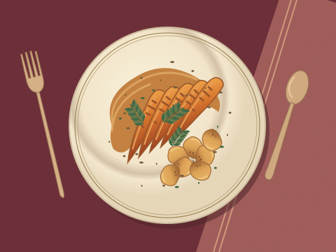
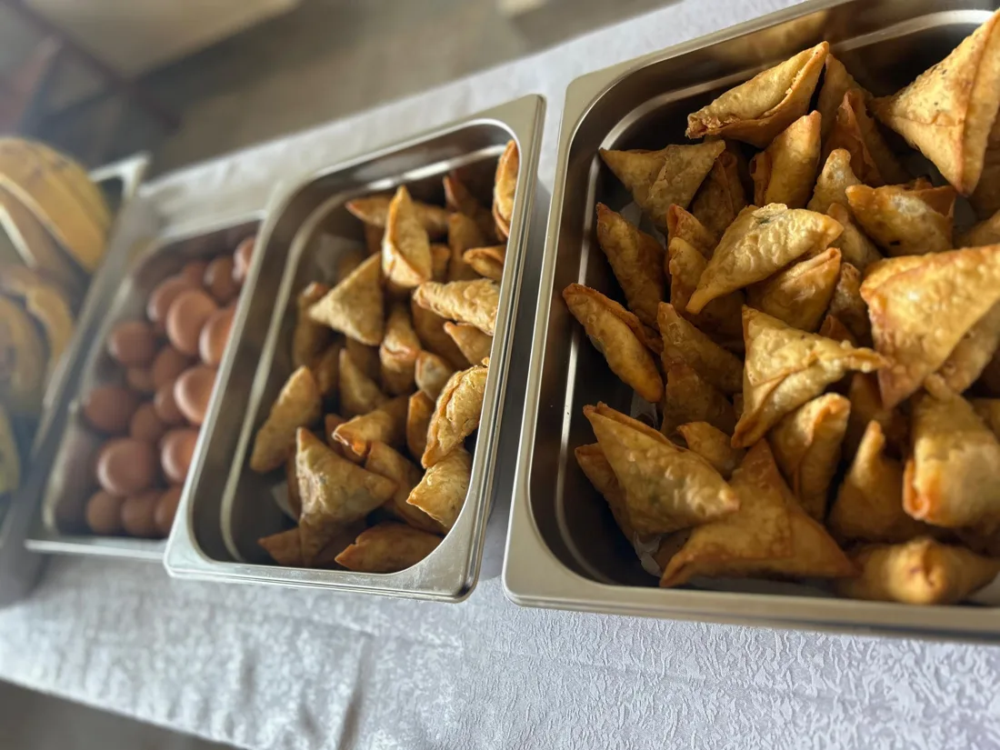
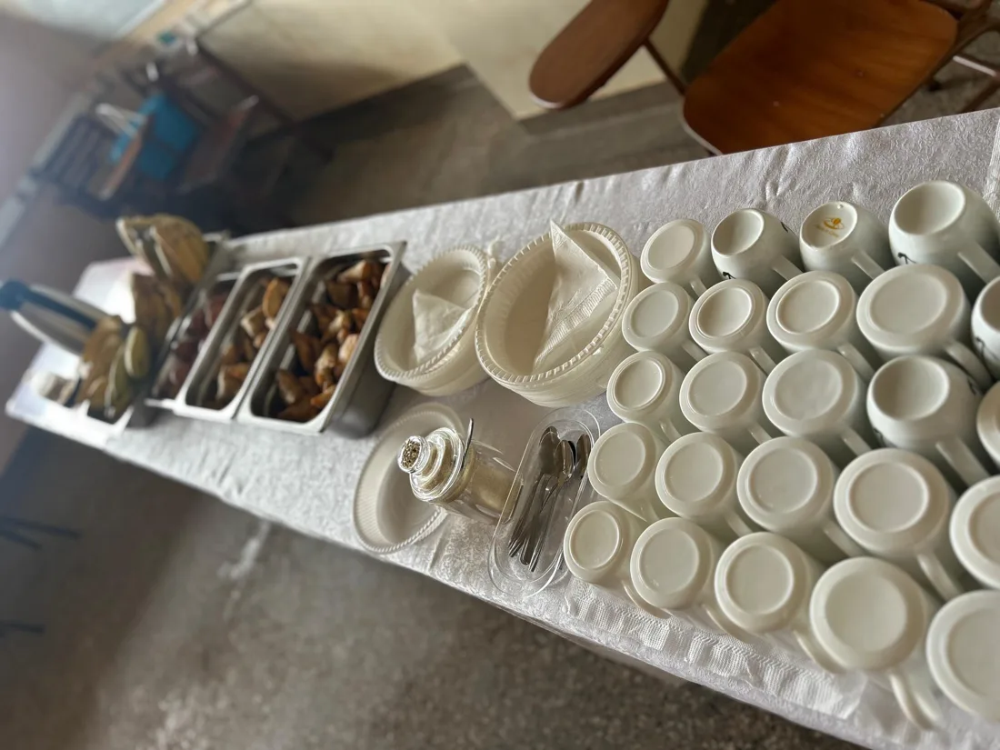
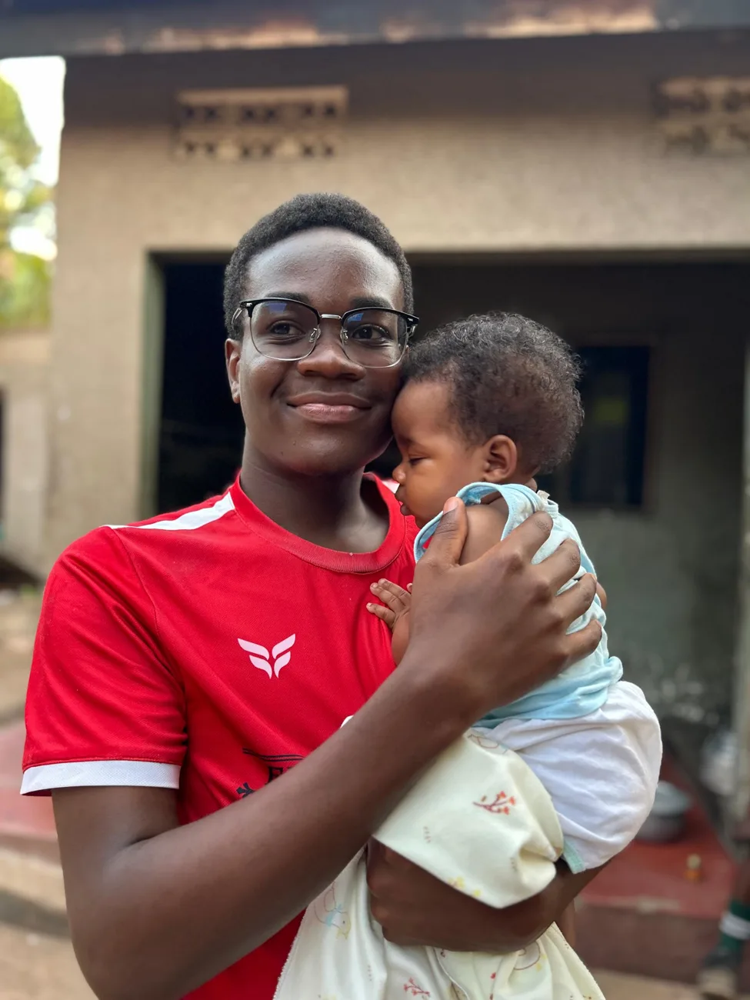
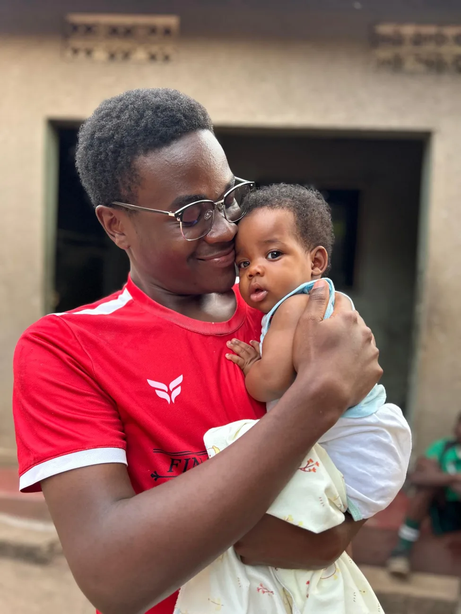

To begin
Garden vegetables
Crisp shapes and contrasting colours give a small first plate a clear focus.

I’m Martin. While people settle around a table, I’m usually watching the details. Is everything ready together? Does the plate look inviting? That quiet work is where I feel most myself.
I like to think things through before I speak. I bring the same habit to catering. Working backwards from serving time gives every task a place, and following through matters more to me than making a fuss.
Outside class I spend time preparing food, arranging it, and thinking about the people who will eat it. Catering brings my independent streak and my appreciation for good company to the same table.
Quality begins with preparation. Creativity comes in how a meal looks and feels. Hospitality means noticing whether the person at the table has what they need.
My catering work is a way to practise those things beyond the classroom. I want to sharpen my planning, learn to price a menu responsibly, and build a service I can deliver with care.
A close-up lets you see how food has been arranged in a tray. Step back and the question changes: can someone pick up a cup, reach the food and make room for the next person?


Presentation study from my catering album. Event details, quantities and client feedback have not been supplied.


Picture arriving with one hand already holding a plate. Where would you put the cutlery? That small question is a good way to begin thinking about hospitality.
This space is ready for guest photographs and genuine feedback from catering events, once contributors give permission.